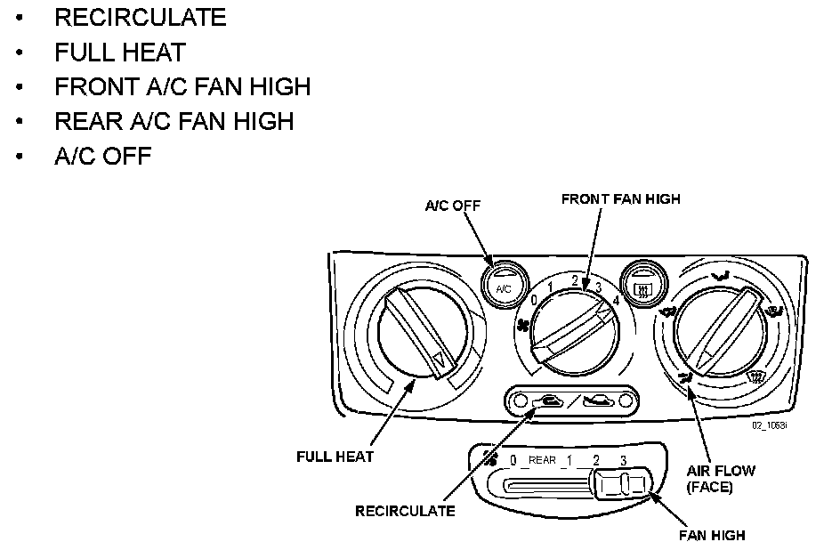
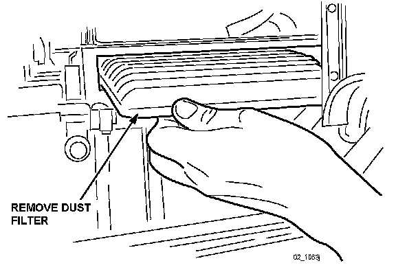
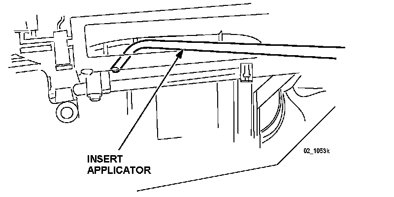
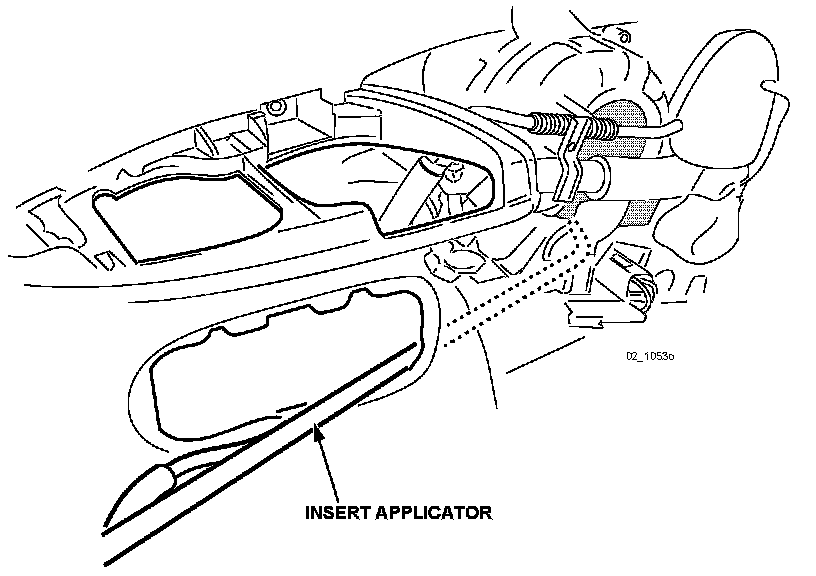

2000-2003 MPV Front A/C and Rear A/C
2000-2003 MPV Front AC1. Dry the evaporator using the following procedure:
WARNING:
Running the engine inside an enclosed area, such as a garage, is dangerous. Exhaust gas, which contains poisonous carbon monoxide, could easily enter the cabin. Loss of consciousness or even death could occur. Don't run the engine when inside an enclosed area.
A. Start the engine.

B. Set the HVAC controls as follows:
^ RECIRCULATE
^ FULL HEAT
^ FRONT A/C FAN HIGH
^ REAR A/C FAN HIGH
^ A/C OFF
C. Open one window approximately one half inch.
D. Let the engine run for 15 minutes.
2. Remove the glove box by:
A. Pushing the top stops inward.
B. At the right side hinge, lift the clip out of its seat.
C. Pull the left axle pin out towards the right side and remove the glove box.
3. Remove the dust filter cover located over the fan assembly by depressing the clip on the inner side of the cover.

4. Remove the dust filter by pulling it out of the filter housing. Discard the filter if dirty.
5. Shake a bottle of Mazda Air Cooling Coil Coating well and attach it to the applicator, then connect the applicator to compressed shop air.

6. Insert the applicator into the empty filter housing (approximately 4-1/4 inches from the tip of the applicator). Point the nozzle tip downwards and towards the center (approximately the 7 o'clock position).
7. Spray the entire contents of the bottle in short bursts, 3 seconds ON, 3 seconds OFF into the rotating fan. A fine mist may exit from the ducts.
NOTE:
If the vehicle is equipped with rear a/c, skip STEP 8 and proceed to STEP 9.
8. When the bottle is empty, stop the engine and remove the applicator.
NOTE:
For reuse, clean the applicator by flushing a bottle of clean water through it.
9. Install the previously cleaned or new filter as needed and reinstall the filter cover.
10. Reinstall the glove box.
2000-2003 MPV Rear AC (if equipped)
11. Remove the right side cup holder.
12. Remove and disconnect the rear fan control panel and convenience tray, if equipped.
13. Be sure the HVAC controls are set per STEP 1B.
NOTE:
The rear fan will operate even though the rear fan control panel is disconnected.
14. Shake a new bottle of Mazda Air Cooling Coil Coating well and attach it to the applicator, then connect the applicator to compressed shop air.

15. Begin inserting the applicator through the opening of the control panel/convenience tray front to back with the tip pointed up (for space). While inserting the probe, rotate the tip outward toward the fan air intake opening. When inserted (depth of insertion is approximately half the length of the applicator), point the tip side center into the cage without touching it.
16. Spray the entire contents of the bottle in short bursts, 3 seconds ON, 3 seconds OFF into the rotating fan. A fine mist may exit from the ducts.
17. When the bottle is empty, stop the engine and remove the applicator.
NOTE:
For reuse, clean the applicator by flushing a bottle of clean water through it.
18. Use STEP 1 to dry and cure the product.
19. While the product is drying, re-install the removed parts.
20. Note application date in service record.